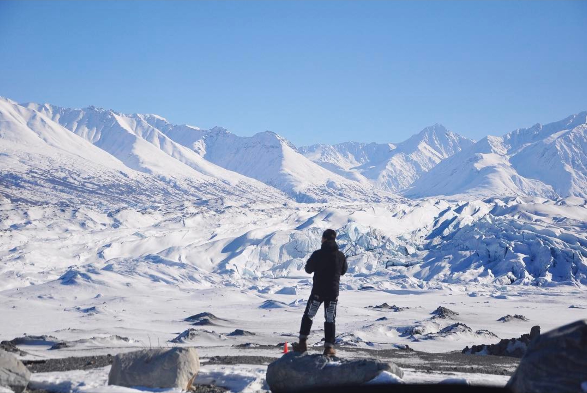

I'm a Software Engineer at Snap Inc.
Firm supporter of PyPy
Playing with Kotlin.
I’m now a Ph.D. student in the Department of Computer Science and Engineering at Washington University.
I'm advised by Dr. William Yeoh and working on Distributed
Constrained Optimization.
I was an undergraduate researcher and assistant bioinformatic analyst after graduation at Corbin Jones's Lab.
Beyond Code
When I'm not coding, you'll find me on the slopes! I'm an avid snowboarder and skier, always chasing fresh powder and perfect runs. The mountains are my second home, where I find balance between the digital world and the great outdoors.